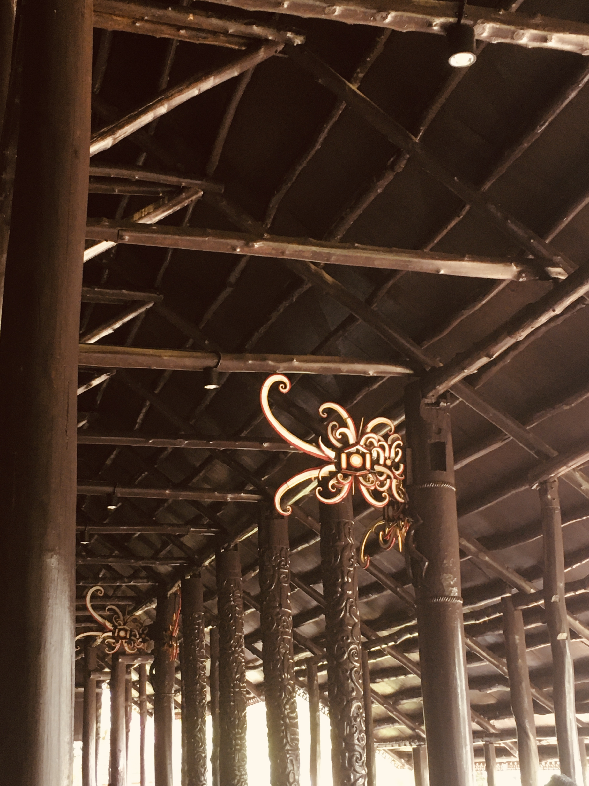
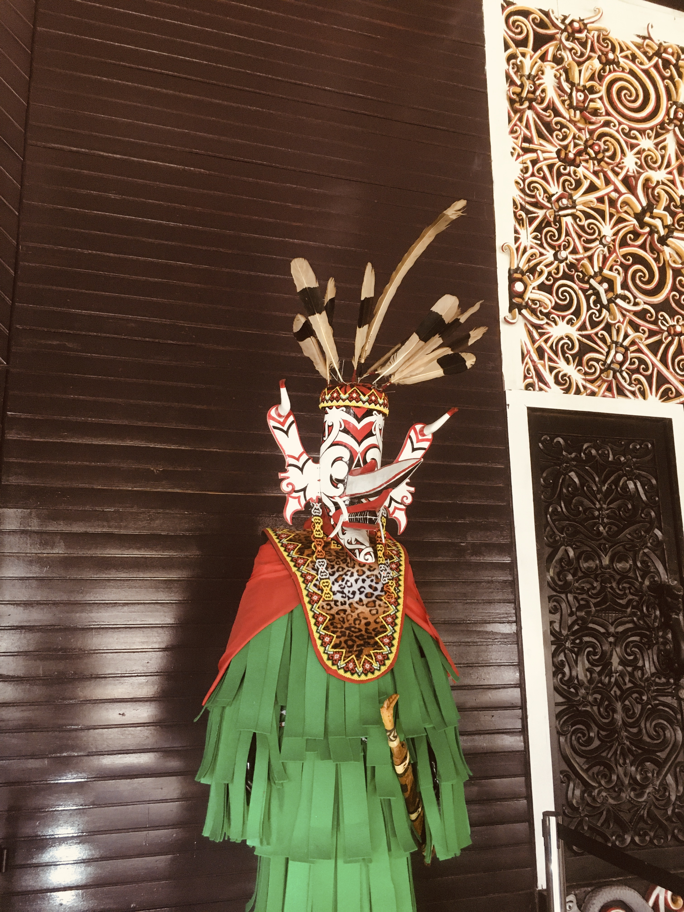
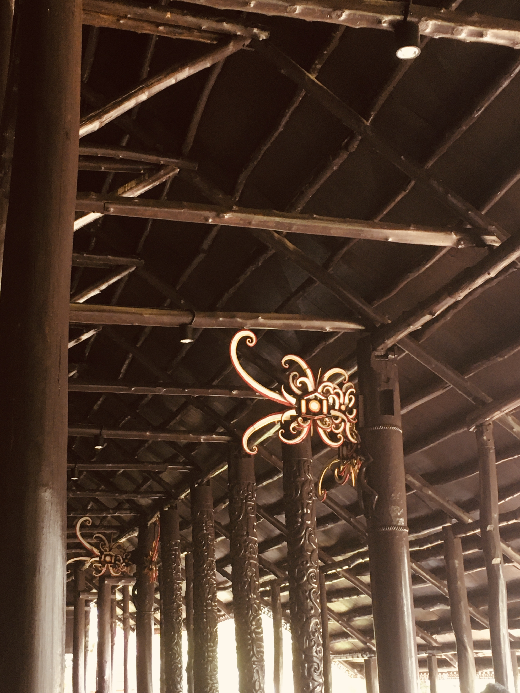
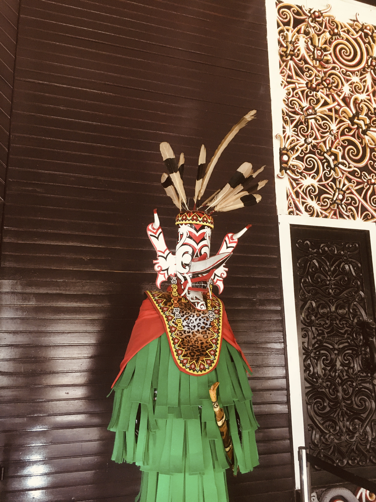
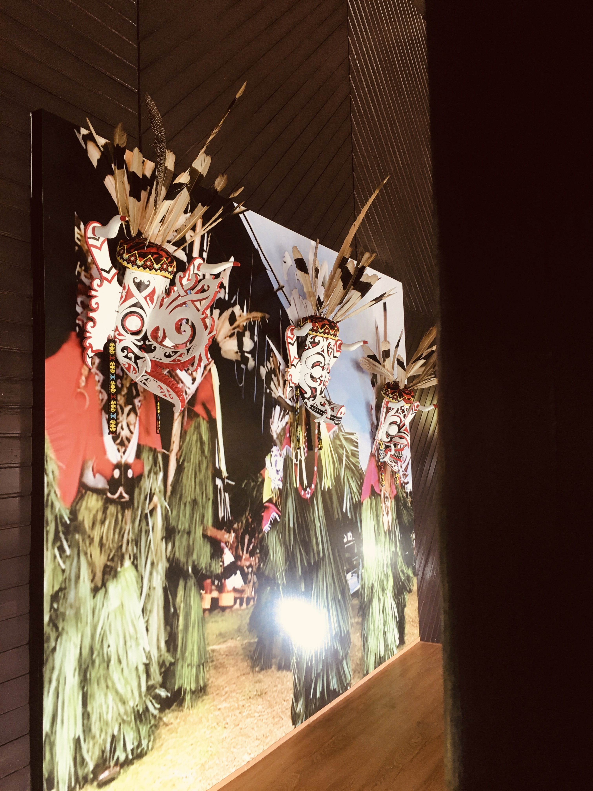
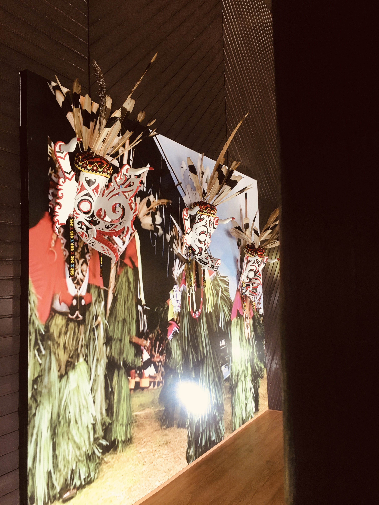

Anjungan Kalimatan Timur
Setelah puas mengagumi Rumah Bubungan Tinggi, kami pun melangkah ke sebelah untuk mengunjungi Anjungan Kalimantan Timur. Dan wow, pemandangan yang menyambut kami benar-benar bikin speechless! Rumah Lamin berdiri megah dengan panjang yang bikin leher pegal kalau mau lihat ujung ke ujung - bayangkan aja, panjangnya bisa sampai 300 meter! Itu kayak tiga kali lapangan sepak bola, lho. Yang langsung bikin takjub adalah konsepnya yang totally berbeda dari rumah-rumah modern sekarang. Ini tuh rumah untuk puluhan keluarga yang hidup bareng dalam satu bangunan besar. Jadi bayangin aja, nenek, kakek, om, tante, sepupu, semua tinggal di satu tempat. Kedengarannya ribet? Tapi ternyata ini adalah filosofi hidup suku Dayak Kenyah yang luar biasa - mereka percaya banget sama kekuatan kebersamaan.
Pada awal berdirinya, museum ini bertujuan untuk mengedukasi masyarakat tentang pentingnya peran pemadam kebakaran dalam kehidupan sehari-hari. Koleksi yang paling menarik adalah mobil pemadam tua, helm-helm klasik, serta prasasti Brandweer Batavia 1929 yang menjadi saksi sejarah perkembangan pemadam kebakaran di Jakarta.
Setelah puas mengagumi Rumah Bubungan Tinggi, kami pun melangkah ke sebelah untuk mengunjungi Anjungan Kalimantan Timur. Dan wow, pemandangan yang menyambut kami benar-benar bikin speechless! Rumah Lamin berdiri megah dengan panjang yang bikin leher pegal kalau mau lihat ujung ke ujung - bayangkan aja, panjangnya bisa sampai 300 meter! Itu kayak tiga kali lapangan sepak bola, lho. Yang langsung bikin takjub adalah konsepnya yang totally berbeda dari rumah-rumah modern sekarang. Ini tuh rumah untuk puluhan keluarga yang hidup bareng dalam satu bangunan besar. Jadi bayangin aja, nenek, kakek, om, tante, sepupu, semua tinggal di satu tempat. Kedengarannya ribet? Tapi ternyata ini adalah filosofi hidup suku Dayak Kenyah yang luar biasa - mereka percaya banget sama kekuatan kebersamaan.
Di era media sosial yang malah bikin kita makin terpisah meskipun secara digital "terhubung", Rumah Lamin ini kayak mengingatkan kita tentang arti kebersamaan yang sesungguhnya. Bukan cuma share foto atau kasih like, tapi benar-benar hadir secara fisik dan emosional untuk orang-orang terdekat. Sebelum meninggalkan anjungan ini, kami sempat duduk-duduk di teras rumah sambil ngobrol dengan beberapa pengunjung lain yang sama-sama terpesona. Ada keluarga dari Jakarta yang bilang pengen banget ngajak anak-anaknya kesini biar tau gimana indahnya hidup gotong royong. Ada juga mahasiswa dari Bandung yang lagi bikin skripsi tentang arsitektur tradisional dan dia bilang Rumah Lamin ini jadi inspirasi besar buat desain komunitas modern yang lebih humanis. Yang bikin sedih sekaligus bangga adalah fakta bahwa TMII ini jadi salah satu tempat terpenting untuk melestarikan warisan budaya Indonesia. Di tengah pembangunan dan modernisasi yang kadang menggerus tradisi, tempat kayak gini jadi pengingat penting tentang siapa kita sebenarnya dan dari mana kita berasal. Pulang dari Rumah Lamin, hati rasanya penuh dengan refleksi. Mungkin kita nggak bisa hidup persis kayak masyarakat Dayak zaman dulu, tapi setidaknya kita bisa belajar dari nilai-nilai mereka: pentingnya kebersamaan, gotong royong, musyawarah, dan rasa hormat terhadap alam. Siapa tau, dengan mengingat dan menerapkan nilai-nilai ini, hidup kita bisa jadi lebih bermakna dan bahagia.


 



-
Titik Kontrol Geodesi 0IKN
Sejarah dan Fungsi: Ini adalah Titik Kontrol Geodesi yang dipasang oleh Badan Informasi Geospasial (BIG) sebagai bagian dari sistem pemetaan Indonesia. Yang unik dari titik ini adalah kode "0IKN" - kemungkinan besar ini adalah titik kontrol khusus untuk Ibu Kota Nusantara (IKN) yang sedang dibangun di Kalimantan Timur!- Fungsi Penting:
- Sebagai titik referensi untuk pemetaan dan survei lahan
- Dasar koordinat untuk pembangunan infrastruktur IKN
- Membantu dalam perencanaan tata kota yang presisi
- Digunakan untuk GPS dan sistem navigasi
- Makna Simbolis: Titik ini mewakili awal dari babak baru Indonesia - perpindahan ibu kota dari Jakarta ke Kalimantan Timur. Ini bukan sekadar alat teknis, tapi simbol transformasi bangsa!
- Fungsi Penting:
-
Tari Perang Dayak
Sejarah dan Budaya: Ini adalah foto Tari Perang tradisional suku Dayak dengan kostum lengkap dan topeng yang menakjubkan! Tarian ini punya sejarah panjang sebagai:- Fungsi Tradisional:
- Ritual perlindungan sebelum berperang atau berburu
- Tarian pengusir roh jahat dari kampung
- Upacara penyambutan tamu penting
- Ritual keberanian untuk para pemuda
- Makna Kostum:
- Topeng menyeramkan: melambangkan kekuatan supernatural
- Bulu burung enggang: simbol keberanian dan kehormatan
- Pakaian rumput: koneksi dengan alam dan hutan
- Senjata tradisional: mandau, sumpit, dan perisai
- Filosofi: Tarian ini mengajarkan bahwa kekuatan sejati bukan hanya fisik, tapi juga spiritual dan mental!
- Fungsi Tradisional:
-
Alat Penumbuk/Penghalus Padi Dayak
Sejarah dan Fungsi: Ini adalah lesung dan alu tradisional suku Dayak yang digunakan untuk mengolah padi! Alat ini sudah dipakai sejak nenek moyang Dayak mulai bercocok tanam.- Fungsi Utama:
- Menumbuk padi untuk memisahkan gabah dari kulitnya
- Menghaluskan beras menjadi tepung untuk makanan tradisional
- Mengolah jagung dan biji-bijian lainnya
- Membuat bumbu halus untuk masakan
- Bagian-bagiannya:
- Lesung kayu panjang dengan dua lubang - untuk menumbuk berdua
- Alu kayu (tongkat penumbuk) - biasanya sepasang
- Ukiran di ujung lesung - motif tradisional Dayak untuk keindahan
- Makna Budaya:
- Gotong royong - biasanya digunakan berdua atau berkelompok
- Ritual panen - bagian penting dari upacara syukur padi
- Simbol kemakmuran - rumah yang punya lesung berarti punya banyak padi
- Warisan keluarga - sering diwariskan turun-temurun
- Keunikan: Lesung Dayak ini lebih panjang dari lesung Jawa, memungkinkan dua orang bekerja sekaligus dengan ritme yang sinkron!
- Fungsi Utama:
-
Relief Kepemimpinan Adat Dayak
Sejarah dan Makna: Ini adalah relief ukiran yang menggambarkan struktur kepemimpinan adat suku Dayak, dengan figur pemimpin/ketua suku di bagian tengah!- Simbolisme Relief:
- Figur tengah yang besar: melambangkan Kepala Adat/Ketua Suku (Pembakal atau Damang)
- Pola melingkar di sekitarnya: menggambarkan masyarakat yang mengelilingi pemimpin
- Motif spiral dan tumbuhan: keharmonisan antara pemimpin dan rakyat
- Senjata dan ornamen: kekuatan dan wibawa kepemimpinan
- Struktur Kepemimpinan yang Digambarkan:
- Damang/Pembakal (ketua suku) - figur sentral
- Mantir (pembantu kepala adat) - di sekitar figur utama
- Masyarakat biasa - dilambangkan motif-motif kecil
- Filosofi Kepemimpinan Dayak:
- Pemimpin sebagai pelindung - seperti pohon besar yang menaungi
- Keputusan kolektif - meski ada pemimpin, keputusan tetap musyawarah
- Tanggung jawab spiritual - pemimpin juga penghubung dengan leluhur
- Keadilan dan kebijaksanaan - harus bijak seperti yang digambarkan relief
- Makna dalam Kehidupan: Relief ini mengajarkan bahwa kepemimpinan sejati itu bukan tentang kekuasaan, tapi tentang melayani dan melindungi masyarakat, seperti yang diajarkan dalam budaya Dayak!
- Simbolisme Relief:
 
